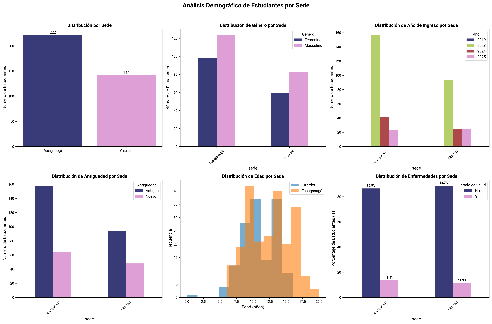
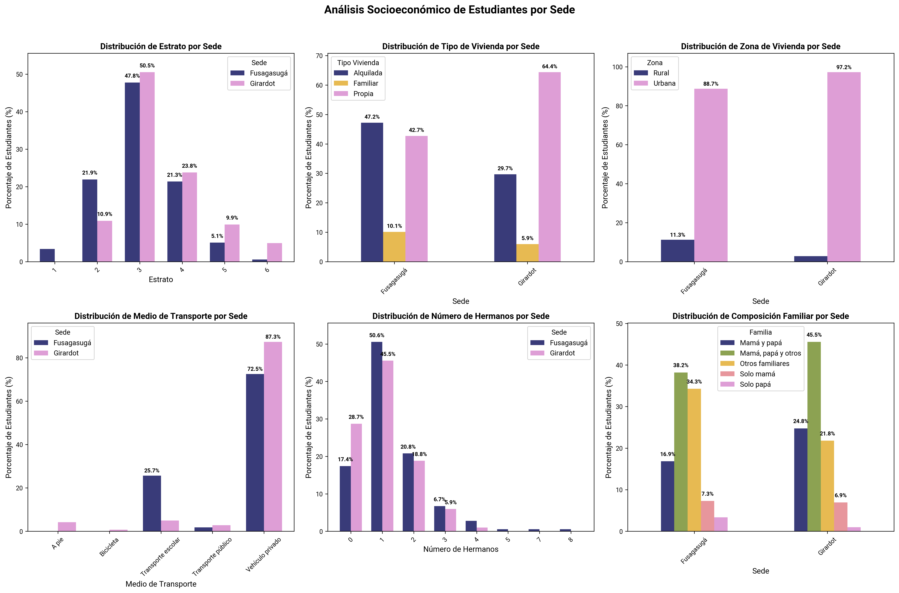
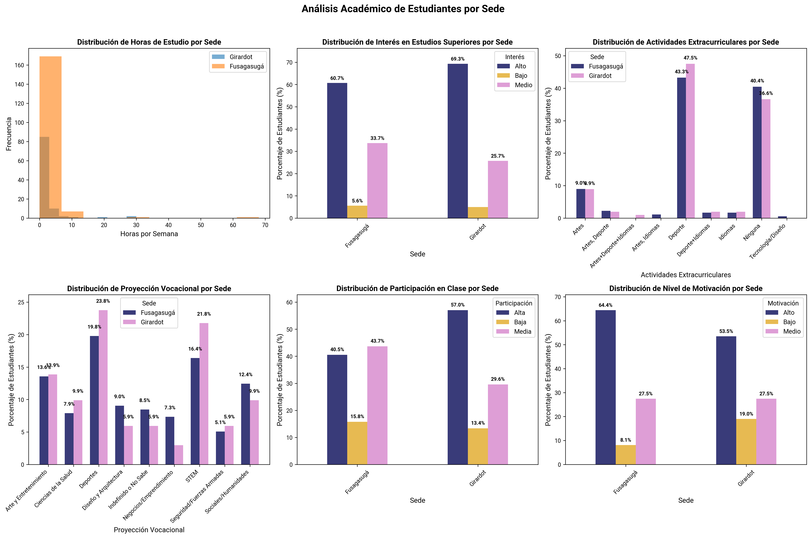
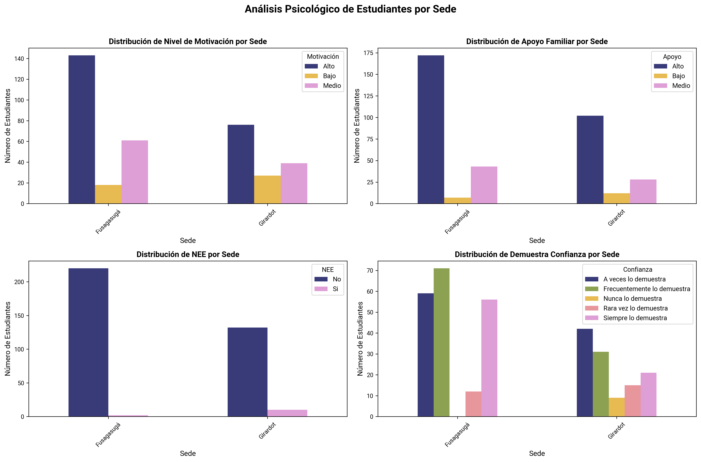

Análisis Exploratorio de Datos de Estudiantes 2024-2025#
Resumen#
Este análisis explora las características demográficas, socioeconómicas, académicas y psicológicas de los estudiantes de la institución educativa.
Sedes: Fusagasugá, Girardot
Total estudiantes: 364
Total variables: 35
Distribución por sede:
Fusagasugá: 222 estudiantes (61.0%)
Girardot: 142 estudiantes (39.0%)
1. Análisis Demográfico#

Análisis de las características demográficas de los estudiantes, comparando distribuciones entre sedes.
Interpretación#
Distribución por Sede: Comparación del número total de estudiantes entre Fusagasugá y Girardot
Género por Sede: Distribución de género (masculino/femenino) en cada sede
Año de Ingreso por Sede: Años de ingreso de estudiantes por año académico
Antigüedad por Sede: Tiempo de permanencia de los estudiantes en la institución
Distribución de Edad por Sede: Histogramas superpuestos mostrando la distribución de edades
Enfermedades por Sede: Estado de salud de los estudiantes (con/sin enfermedades)
Conclusiones#
Fusagasugá tiene una matrícula más consolidada o establecida, posiblemente por mayor trayectoria o capacidad operativa.
En ambas sedes predomina el género masculino.
La mayor parte de los estudiantes ingresó en 2023, año de crecimiento notable en ambas sedes.
En ambas sedes predomina la categoría de estudiantes antiguos.
En Fusagasugá, la distribución es más amplia, alcanzando edades de 16 a 18 años.
En Girardot, la mayoría de estudiantes se concentra entre 8 y 13 años.
Los resultados reflejan un estado de salud general favorable. La gran mayoría de estudiantes (más del 85%) no presenta enfermedades
2. Análisis Socioeconómico#

Evaluación de las condiciones socioeconómicas de los estudiantes y sus familias, analizando diferencias entre sedes.
Interpretación#
Estrato por Sede: Distribución de estratos socioeconómicos (1-6) en cada sede
Tipo de Vivienda por Sede: Tipos de vivienda donde residen los estudiantes
Zona de Vivienda por Sede: Ubicación geográfica de las viviendas (urbana/rural)
Medio de Transporte por Sede: Medios de transporte utilizados para llegar a la institución
Número de Hermanos por Sede: Tamaño de las familias de los estudiantes
Composición Familiar por Sede: Estructura familiar de los estudiantes
Conclusiones#
La mayoría de los estudiantes pertenecen a los estratos 2 y 3.
Los estratos 1, 5 y 6 son minoritarios.
En Fusagasugá, predomina la vivienda alquilada, con un porcentaje ligeramente menor de vivienda propia.
En Girardot, la mayoría de los estudiantes residen en vivienda propia.
Ambas sedes presentan fuerte concentración urbana.
El transporte privado es el más utilizado, aunque Girardot presenta más diversidad de medios de transporte.
Las familias tienden a ser pequeñas o medianas, con un promedio de 1 a 2 hijos.
Predominan los núcleos familiares completos o extendidos, lo que sugiere buen nivel de acompañamiento familiar.
3. Análisis Académico#

Evaluación del desempeño y características académicas de los estudiantes, incluyendo hábitos de estudio y proyecciones vocacionales.
Interpretación#
Horas de Estudio por Sede: Distribución de horas semanales dedicadas al estudio en casa
Interés en Estudios Superiores por Sede: Nivel de interés en continuar estudios universitarios
Actividades Extracurriculares por Sede: Participación en actividades fuera del currículo académico
Proyección Vocacional por Sede: Aspiraciones profesionales y vocacionales de los estudiantes
Participación en Clase por Sede: Nivel de participación activa en las clases
Nivel de Motivación por Sede: Grado de motivación académica de los estudiantes
Conclusiones#
En ambas sedes, la mayoría de los estudiantes dedica menos de 10 horas semanales al estudio fuera del aula.
Hay algunos casos atípicos con más de 30 horas de estudio en casa.
El interés por la educación superior es alto en ambas sedes, ligeramente superior en Girardot. Esto sugiere expectativas positivas hacia la continuidad educativa.
Las actividades deportivas son las más populares en ambas sedes.
Se observa una limitada oferta o interés en áreas culturales y tecnológicas, lo cual podría explorarse para fortalecer habilidades complementarias.
Las vocaciones se orientan principalmente a carreras deportivas y STEM, con menor interés en áreas artísticas o sociales.
Los niveles bajos en participación en clase son minoritarios, lo que indica una buena dinámica participativa general.
En general, los estudiantes se muestran motivados, especialmente en Fusagasugá. Girardot presenta una proporción mayor de estudiantes con motivación baja, lo que sugiere necesidad de refuerzo emocional o pedagógico.
4. Análisis Psicológico#

Evaluación de aspectos psicológicos y socioemocionales que influyen en el desarrollo académico de los estudiantes.
Interpretación#
Nivel de Motivación por Sede: Distribución de los niveles de motivación académica
Apoyo Familiar por Sede: Percepción del apoyo familiar en el proceso educativo
NEE por Sede: Necesidades Educativas Especiales de los estudiantes
Demuestra Confianza por Sede: Nivel de confianza demostrado por los estudiantes
Conclusiones#
La mayoría de los estudiantes manifiesta una actitud positiva hacia el estudio, especialmente en Fusagasugá, aunque en Girardot se observa ligeramente menor y más estudiantes con bajo nivel de motivación.
Se muestra una base sólida de apoyo familiar en ambas sedes.
Existe una baja incidencia de estudiantes con necesidades educativas especiales, ligeramente mayor en Girardot.
La mayoría de los estudiantes muestra niveles moderados o altos de autoconfianza, especialmente en Fusagasugá. En Girardot, aunque los niveles de confianza son más variados.